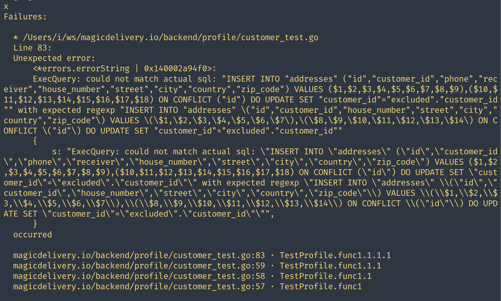
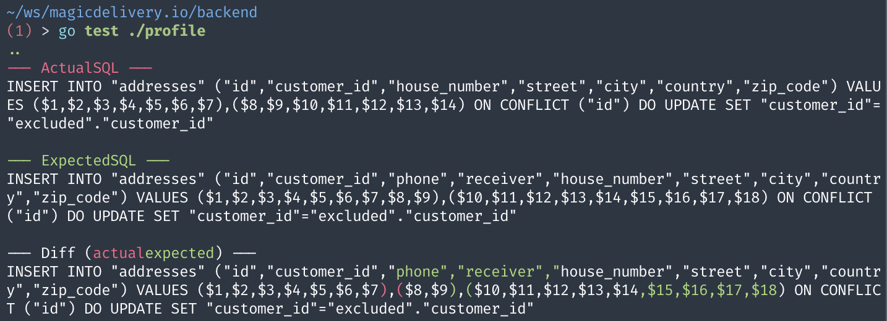

The power of diff in testing - Part 1: SQL queries and mocks
A new day at work
Suppose that you, a good software engineer, just got hired by an e-commerce business. And you are joining a team to work on the profile service to manage customers and their addresses.
There are a Customer and an Address struct, with a couple of gorm tags for the database schema:
type Customer struct {
ID uuid.UUID `gorm:"type:uuid;primaryKey" json:"id"`
Name string `json:"name"`
Age int `json:"age"`
Gender string `json:"gender"`
Email string `gorm:"uniqueIndex" json:"email"`
Phone string `json:"phone"`
Occupation string `json:"occupation"`
Addresses []Address `gorm:"foreignKey:CustomerID" json:"addresses"`
Languages []string `gorm:"type:text[]" json:"languages"`
}
type Address struct {
ID uuid.UUID `gorm:"type:uuid;primaryKey" json:"id"`
CustomerID uuid.UUID `gorm:"type:uuid;not null;index" json:"customer_id"`
HouseNumber int `json:"house_number"`
Street string `json:"street"`
City string `json:"city"`
Country string `json:"country"`
ZipCode string `json:"zip_code"`
}
You look at the method UpdateCustomerWithAddress() which to update a customer and their associated addresses:
type ProfileRepository struct {
db *gorm.DB
}
func NewProfileRepository(db *gorm.DB) *ProfileRepository {
return &ProfileRepository{db: db}
}
// UpdateCustomerWithAddress updates a customer and their associated addresses
func (r *ProfileRepository) UpdateCustomerWithAddress(ctx context.Context, customer *Customer) (err error) {
tx := r.db.WithContext(ctx).Begin() // start a transaction
defer func() {
if err != nil {
tx.Rollback()
}
}()
// upsert customer
err = tx.Clauses(
clause.OnConflict{
Columns: []clause.Column{{Name: "id"}}, // Use the primary key column
DoUpdates: clause.AssignmentColumns([]string{"name", "age", "gender", "email", "phone", "occupation", "languages"}),
},
).Create(customer).Error
if err != nil {
return err
}
// upsert addresses
if len(customer.Addresses) > 0 {
err = tx.Clauses(
clause.OnConflict{
Columns: []clause.Column{{Name: "id"}},
DoUpdates: clause.AssignmentColumns([]string{"house_number", "street", "city", "country", "zip_code"}),
},
).Create(&customer.Addresses).Error
if err != nil {
return err
}
}
return tx.Commit().Error // commit the transaction
}
So far so good. It looks like a typical method to update a customer and their addresses, uses gorm to interact with the database, and wraps the operation in a transaction.
Now you check the test for this method:
package customer
import (
"context"
"testing"
"github.com/DATA-DOG/go-sqlmock"
"github.com/google/uuid"
"gorm.io/driver/postgres"
"gorm.io/gorm"
. "ezpkg.io/conveyz"
)
func customerWithAddress(id, addrID1, addrID2 uuid.UUID) *Customer {
return &Customer{
ID: id,
Name: "Alice Nguyen",
Age: 22,
Gender: "female",
Email: "alice@example.com",
Phone: "(+84) 123-456-789",
Occupation: "Software Engineer",
Languages: []string{"English", "Vietnamese", "Japanese"},
Addresses: []Address{
{
ID: addrID1,
HouseNumber: 42,
Street: "Ly Thuong Kiet",
City: "Ha Noi",
Country: "Vietnam",
ZipCode: "101010",
},
{
ID: addrID2,
HouseNumber: 21,
Street: "Vo Van Kiet",
City: "Ho Chi Minh City",
Country: "Vietnam",
ZipCode: "210120",
},
},
}
}
func TestProfile(t *testing.T) {
Convey("Test Profile", t, func() {
ctx := context.Background()
db, mock, err := sqlmock.New()
Ω(err).ToNot(HaveOccurred())
gormDB, err := gorm.Open(postgres.New(postgres.Config{Conn: db}))
Ω(err).ToNot(HaveOccurred())
profileRepo := NewProfileRepository(gormDB)
Convey("Customer", func() {
Convey("UpdateCustomerWithAddress", func() {
Convey("both customer + address changes", func() {
customerID := uuid.New()
addrID1, addrID2 := uuid.New(), uuid.New()
customer := customerWithAddress(customerID, addrID1, addrID2)
mock.ExpectBegin()
mock.ExpectExec(`INSERT INTO "customers" \("id","name","age","gender","email","phone","occupation","languages"\) VALUES \(\$1,\$2,\$3,\$4,\$5,\$6,\$7,\(\$8,\$9,\$10\)\) ON CONFLICT \("id"\) DO UPDATE SET "name"="excluded"."name","age"="excluded"."age","gender"="excluded"."gender","email"="excluded"."email","phone"="excluded"."phone","occupation"="excluded"."occupation","languages"="excluded"."languages"`).WithArgs(
customerID, customer.Name, customer.Age, customer.Gender, customer.Email, customer.Phone, customer.Occupation, customer.Languages[0], customer.Languages[1], customer.Languages[2],
).WillReturnResult(sqlmock.NewResult(1, 1))
addr0, addr1 := customer.Addresses[0], customer.Addresses[1]
mock.ExpectExec(`INSERT INTO "addresses" \("id","customer_id","house_number","street","city","country","zip_code"\) VALUES \(\$1,\$2,\$3,\$4,\$5,\$6,\$7\),\(\$8,\$9,\$10,\$11,\$12,\$13,\$14\) ON CONFLICT \("id"\) DO UPDATE SET "customer_id"="excluded"."customer_id"`).WithArgs(
addr0.ID, customerID, addr0.HouseNumber, addr0.Street, addr0.City, addr0.Country, addr0.ZipCode,
addr1.ID, customerID, addr1.HouseNumber, addr1.Street, addr1.City, addr1.Country, addr1.ZipCode,
).WillReturnResult(sqlmock.NewResult(1, 2))
mock.ExpectExec(`INSERT INTO "addresses" \("id","customer_id","house_number","street","city","country","zip_code"\) VALUES \(\$1,\$2,\$3,\$4,\$5,\$6,\$7\),\(\$8,\$9,\$10,\$11,\$12,\$13,\$14\) ON CONFLICT \("id"\) DO UPDATE SET "house_number"="excluded"."house_number","street"="excluded"."street","city"="excluded"."city","country"="excluded"."country","zip_code"="excluded"."zip_code"`).WithArgs(
addr0.ID, customerID, addr0.HouseNumber, addr0.Street, addr0.City, addr0.Country, addr0.ZipCode,
addr1.ID, customerID, addr1.HouseNumber, addr1.Street, addr1.City, addr1.Country, addr1.ZipCode,
).WillReturnResult(sqlmock.NewResult(1, 2))
mock.ExpectCommit()
err = profileRepo.UpdateCustomerWithAddress(ctx, customer)
Ω(err).ToNot(HaveOccurred())
err = mock.ExpectationsWereMet()
Ω(err).ToNot(HaveOccurred())
})
})
})
})
}
So, the test is written with ezpkg.io/conveyz, which is a fancy combination of smartystreets/convey and onsi/gomega. It uses go-sqlmock to mock the database and assert the SQL queries. It seems like a lot of boilerplate code to write and maintain. But at least it works. And by looking at the tests, we know what the actual SQL queries are.
Okay, your onboarding task is to add a couple of new fields to the Address struct: Phone and Receiver. Because your boss told you, when using our delivery service, a customer may want to deliver to her husband or her friend, with different phone numbers.
It’s just a simple change – you tell yourself. You add these new fields to the Address struct, and the UpdateCustomerWithAddress() method should be able to handle it automatically with the magic of gorm.
type Address struct {
ID uuid.UUID `gorm:"type:uuid;primaryKey" json:"id"`
CustomerID uuid.UUID `gorm:"type:uuid;not null;index" json:"customer_id"`
Phone string `json:"phone"` // 👈 one here
Receiver string `json:"receiver"` // and here
HouseNumber int `json:"house_number"`
Street string `json:"street"`
City string `json:"city"`
Country string `json:"country"`
ZipCode string `json:"zip_code"`
}
You start all services on local, send a couple of HTTP requests with the new fields, and everything works fine: database schema is updated, data is saved, and retrieved correctly. You are confident that the changes are good to go.
Now, before sending a pull request, you need to update the tests to cover the new fields. It should be a simple fix, and the tests will work again, right?

Ugh, you look at the error message and quickly get lost in the SQL queries. You know that you need to update the SQL queries to include the new fields, but it’s hard to figure out where to put the changes. You try to update the queries many times, but the tests keep failing. You are frustrated and starting to doubt your changes.
Okay, at last, maybe you can copy the SQL queries from the error message and paste them into the test. But it’s not a good practice. You just overrode the previous queries with the new queries. Who knows if your new queries are always correct? How to compare the new queries with the previous queries? And what if the queries change in the future? You need to update the tests again and again. It’s a nightmare!
Finding a better way to test SQL queries
It’s time to find a better way to test the SQL queries. Instead of the messy regexp matching, you need a tool that can compare the actual queries with the expected queries, and show you the differences, so you can quickly identify what’s wrong.
Luckily, go-sqlmock has QueryMatcherOption to allow you to define a custom matcher for the SQL queries. You can use this feature to compare the actual queries with the expected queries, and show the differences in a human-readable format.
Let’s create a new package sqlmockz:
package sqlmockz
import "github.com/DATA-DOG/go-sqlmock"
var OptionDiffMatcher = sqlmock.QueryMatcherOption(diffMatcherImpl{})
type diffMatcherImpl struct{}
func (diffMatcherImpl) Match(actualSQL, expectedSQL string) error {
// 👉 return an error if the actual SQL is different from the expected SQL
}
And the usage will be like this:
db, mock, err := sqlmock.New(sqlmockz.OptionDiffMatcher)
Implementing the diff matcher
The package ezpkg.io/diffz provides some useful functions to compare the differences between two strings. Two notable functions are diffz.ByChar() and diffz.ByLine(). Under the hook, it uses https://github.com/sergi/go-diff and kylelemons/godebug to calculate the diffs.
In our case of comparing SQL queries, the ByChar() function is more suitable, because it can show the added columns. While in case of comparing JSON or YAML in API response, the ByLine() function serves better.
Now, it’s time to implement the Match() method in the diffMatcherImpl struct:
- Use
diffz.ByChar()to compare the actual SQL with the expected SQL. - If the actual SQL is different from the expected SQL, print the actual SQL, the expected SQL, and the differences.
- Use
colorzto colorize the output for better readability.
package sqlmockz
import (
"fmt"
"github.com/DATA-DOG/go-sqlmock"
"ezpkg.io/colorz"
"ezpkg.io/diffz"
)
var OptionDiffMatcher = sqlmock.QueryMatcherOption(diffMatcherImpl{})
type diffMatcherImpl struct{}
func (diffMatcherImpl) Match(actualSQL, expectedSQL string) error {
diffs := diffz.ByChar(actualSQL, expectedSQL)
if !diffs.IsDiff() {
return nil
}
fmt.Printf("\n%v\n%v\n", colorz.Red.Wrap("--- ActualSQL ---"), actualSQL)
fmt.Printf("\n%v\n%v\n", colorz.Green.Wrap("--- ExpectedSQL ---"), expectedSQL)
fmt.Printf("\n--- Diff (%v%v) ---\n%v\n",
colorz.Red.Wrap("actual"), colorz.Green.Wrap("expected"),
diffz.Format(diffs))
return fmt.Errorf("actual SQL does not equal to expected")
}
You can now use the OptionDiffMatcher in sqlmock:
db, mock, err := sqlmock.New(sqlmockz.OptionDiffMatcher)
And the error message will show exactly what’s need to be changed:

The actual SQL is missing the phone and receiver columns. You can quickly identify the problem, confirm that the change is correct, then update the test accordingly!
Making it even better by ignoring spaces
But you still need to carefully put the spaces correctly in the SQL queries:
addr0, addr1 := customer.Addresses[0], customer.Addresses[1]
mock.ExpectExec(`INSERT INTO "addresses" ("id","customer_id","house_number","street","city","country","zip_code") VALUES ($1,$2,$3,$4,$5,$6,$7),($8,$9,$10,$11,$12,$13,$14) ON CONFLICT ("id") DO UPDATE SET "customer_id"="excluded"."customer_id"`).WithArgs(
addr0.ID, customerID, addr0.HouseNumber, addr0.Street, addr0.City, addr0.Country, addr0.ZipCode,
addr1.ID, customerID, addr1.HouseNumber, addr1.Street, addr1.City, addr1.Country, addr1.ZipCode,
).WillReturnResult(sqlmock.NewResult(1, 2))
It should be better to ignore the spaces when comparing the SQL queries, so you can freely format the SQL queries in a more readable way:
addr0, addr1 := customer.Addresses[0], customer.Addresses[1]
mock.ExpectExec(`
INSERT INTO "addresses" (
"id","customer_id","house_number","street","city","country","zip_code",
) VALUES ($1,$2,$3,$4,$5,$6,$7),($8,$9,$10,$11,$12,$13,$14)
ON CONFLICT ("id") DO UPDATE SET "customer_id"="excluded"."customer_id"`
).WithArgs(
addr0.ID, customerID, addr0.HouseNumber, addr0.Street, addr0.City, addr0.Country, addr0.ZipCode,
addr1.ID, customerID, addr1.HouseNumber, addr1.Street, addr1.City, addr1.Country, addr1.ZipCode,
).WillReturnResult(sqlmock.NewResult(1, 2))
Yes, there is a sister function diffz.ByCharZ() to ignore the spaces when comparing the SQL queries. Just put it in the Match() method and you are good to go:
diffs := diffz.ByCharZ(actualSQL, expectedSQL)
Conclusion
By a simple change to the matcher with diffz.ByCharZ(), you can confidently make changes and update the tests. When there is any change in the SQL queries, the error message will show you exactly what’s need to be updated.
Instead of spending hours struggling with the messy regexp matching, you can now focus on the actual important bit and grab a nice cup of coffee.
Enjoy coding! 🚀
Let's stay connected!
Author
I'm Oliver Nguyen. A software maker working mostly in Go and JavaScript. I enjoy learning and seeing a better version of myself each day. Occasionally spin off new open source projects. Share knowledge and thoughts during my journey. Connect with me on , , , , or subscribe to my posts.